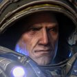
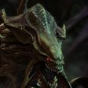

Pulsa Enter o el botón para continuar.
Marine contra hidralisco. Caen objetos al azar: toma el escudo y el stimpack, y huye del zergling explosivo (un disparo lo detona).
Mover: WASD o flechas. Disparar: F o Espacio. Pausa: Enter. Especial (se recarga cada 9 s): G lanza la granada del Marine y . escupe el ácido del Hidralisco. Cada ronda dura 45 s: si se acaba el tiempo, cae una bomba nuclear sobre quien tenga menos vida. Apuntan solos al rival. En 2 jugadores: Marine con WASD + F, Hidralisco con flechas + Shift derecho. El Dark Templar pelea cuerpo a cuerpo (corta solo cuando el rival está a su alcance; en 2 jugadores, disparar = cuchillada), va camuflado (los disparos contra él se desvían hasta que ataca) y su especial es un salto sombrío que lo hace reaparecer detrás del rival. El Zealot pelea cuerpo a cuerpo con dos cuchillas psi (dos tajos por ataque, también automáticos en 1 jugador) y su especial es la Carga: embiste en línea recta hacia el rival, lo empuja y le hace daño (se esquiva moviéndose). Mando: stick o cruceta mueve, A o gatillo dispara, X o B lanza el especial, Start pausa. En móvil salen controles táctiles (mejor en horizontal; en 2 jugadores controlan al Marine).